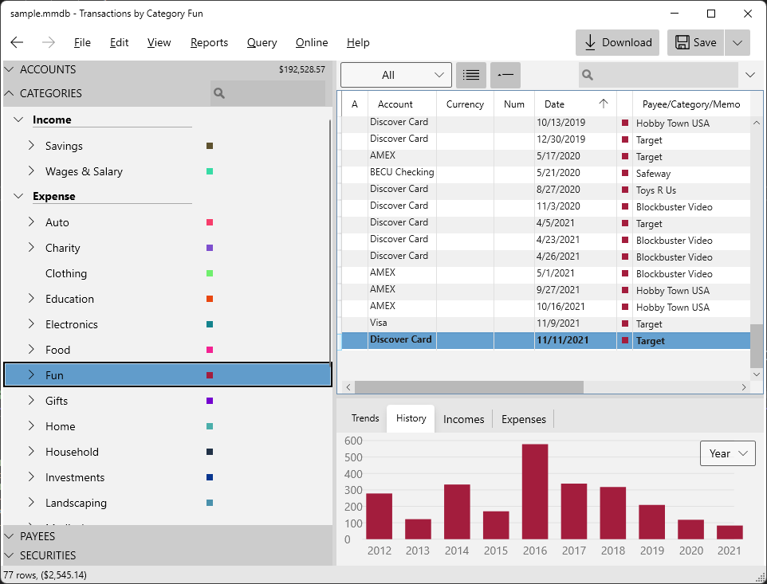

MyMoney.Net is now open source…
A good friend of mine, JP Duplessis and I have been tinkering away on an app for the last 10 years or more, it started out as a replacement for the then cancelled Microsoft Money app. We built it entirely in C#, it started out as WinForms, we ported it to WPF and XAML and then fixed bugs.
We wanted to open source it but I finally got around to doing it today on GitHub. See https://moneytools.github.io/MyMoney.Net/.
The app is really designed for programmers who want to tinker and add stuff. JP added a whole module to help deal with rental properties. The data is stored in sqllite, so it is super easy to extend and add whatever you want.
The surprising thing is how small financial data really is. For a family of 5 with data all the way back to 1997 (which I exported in QFX format from Microsoft Money and my wife’s data from Quicken) the entire database is just over 6 megabytes. In today’s hard drive world, this is miniscule.

So MyMoney.Net loads up the entire database into memory, which means it is super snappy to pivot, slice and dice and jump around your accounts. You might wonder how long it takes to load, ooh, about 1.2 seconds ??
So anyway, I hope a few other people can enjoy the app, and contribute on GitHub. I look forward to many interesting pull requests.
-Cheers, Chris.